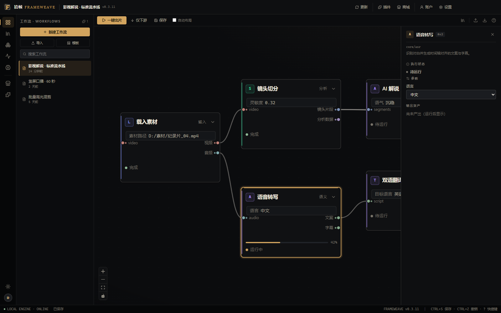
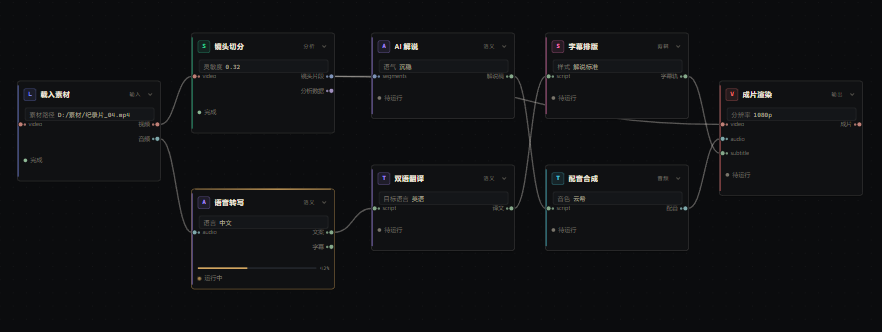
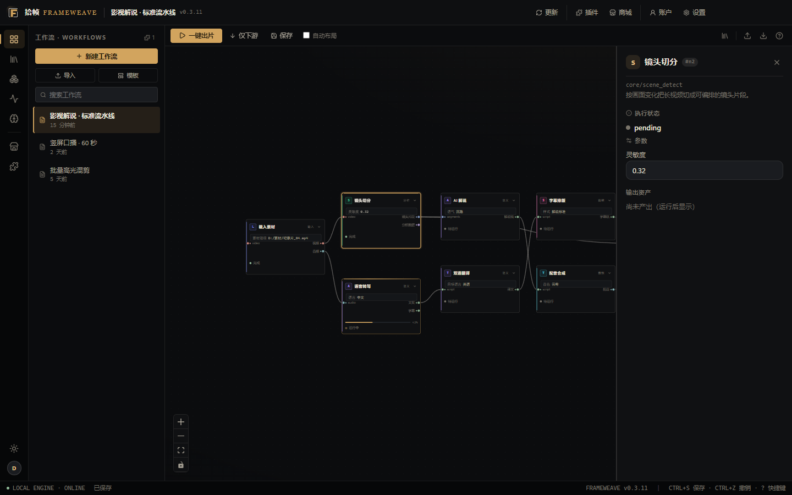
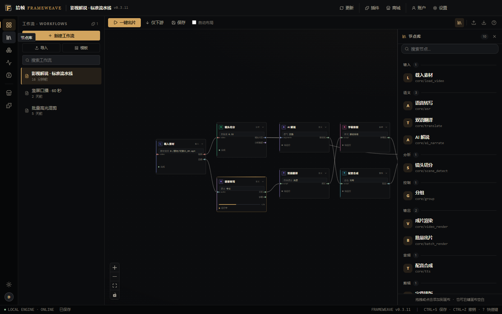
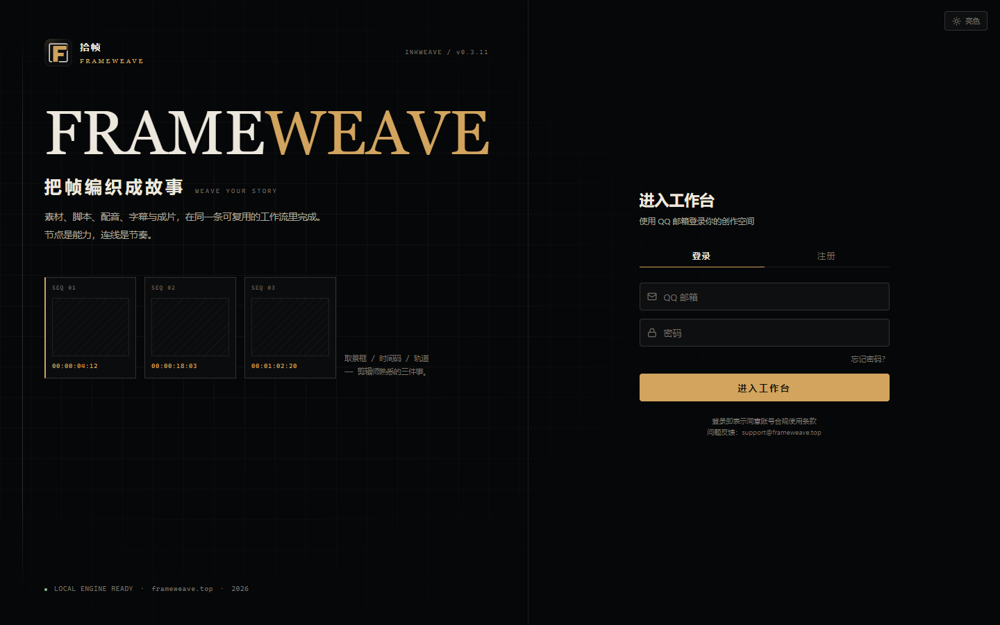
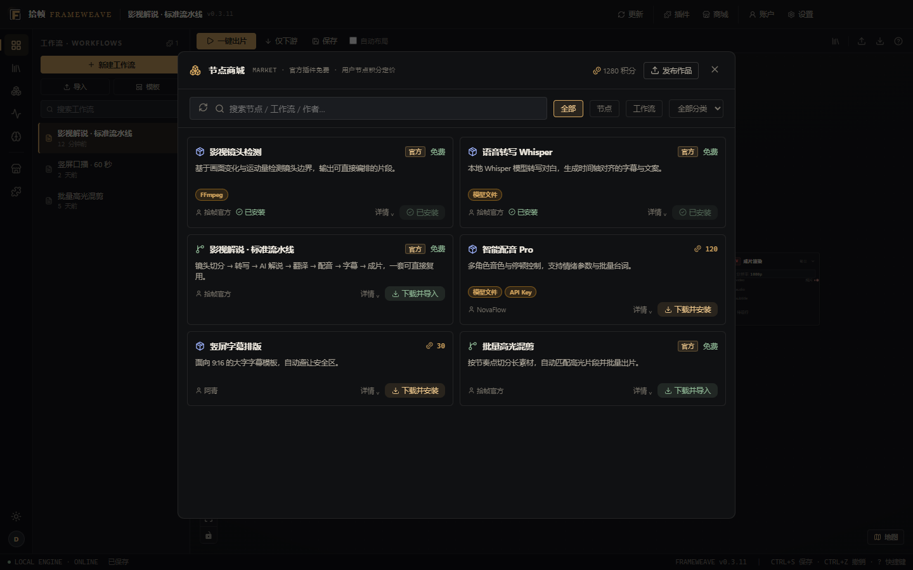

FRAME WEAVEv0.3.12
节点式 AI 视频创作工作台
把帧编织成故事
在无限画布上，把素材、切分、转写、解说、翻译、配音、字幕与渲染连成一条工作流。节点是能力，连线是节奏。
WINDOWS 10 / 11 · x64 / 约 223 MB / v0.3.12

02 / CAPABILITIES
Built for the cut.
四件事，构成一条创作流水线
不是对话框，是编辑台。画布、流水线、本地引擎与节点生态，围绕同一条工作流展开。
素材、脚本、解说、字幕与成片，在同一条可复用的工作流里完成。
-
01
节点画布 NODE CANVAS
无限画布上编排镜头、语音、翻译与渲染节点。端口即数据流，改一个参数，只重跑下游。
-
02
解说流水线 NARRATION PIPELINE
镜头切分、语音转写、AI 解说、双语翻译、配音合成、字幕排版，七个环节连成一条链。
-
03
本地引擎与素材 LOCAL ENGINE
解码、切分与成片渲染走本机；素材留在本地磁盘，不上传云端。
-
04
工作流与节点生态 ECOSYSTEM
保存整条工作流并复用；从节点商城安装社区节点，把新能力接进画布。
03 / PIPELINE
One pipeline, seven steps.
从素材到成片，一条链跑完
每个环节都是一个可替换的节点。默认链路覆盖解说视频的标准流程，也可以按题材拆开重组。
- 01素材INGEST
- 02镜头切分SCENE
- 03语音转写ASR
- 04解说 · 翻译SCRIPT
- 05配音TTS
- 06字幕排版SUBTITLE
- 07成片渲染RENDER

04 / INTERFACE
An editing desk, not a console.
为长时间剪辑而生的界面
检查器常驻、节点库触手可及、状态栏只留必要信息。信息密度靠留白与字号区分，不靠卡片堆叠。

选中节点即见参数、执行状态与输出资产；结果按节点留存，可单独重跑。

节点按输入、分析、语义、音频、剪辑、输出分组，拖进画布即可用。

本地引擎状态与创作空间，一条路径进入工作台。
05 / ECOSYSTEM
Make it once, run it again.
工作流复用与节点生态
保存工作流 REUSE
节点、参数、连线整条存成工作流，下次载入即用；同一套流程可套用多条素材。
节点商城 MARKET
安装官方与社区节点，把新能力接进画布；自定义节点沿用同一套端口协议。
批量出片 BATCH
成片渲染与批量出片成对使用：一次配置，多条素材排队产出。

节点商城：官方与社区节点，一键下载安装到画布。
06 / LOCAL FIRST
Your footage stays on your disk.
本地引擎，素材不上传
剪辑与渲染在桌面端完成。只有你主动触发的语义类节点，才需要联网调用所选模型服务。
本地引擎
解码、切分与成片渲染在本机执行，批量出片不必排队等云端。
素材不上传
视频、音频与图片默认留在你的磁盘；语义能力只发送必要的文本片段。
每一步可见
每个节点的输入输出都能单独查看与重跑，改一处不会污染上游结果。
节点是能力，连线是节奏。— 拾帧的设计注解
07 / DOWNLOAD
Get the workbench.
下载 Windows 版 v0.3.12
LATEST RELEASE / WINDOWS
BUILD
若系统提示「Windows 已保护你的电脑」，选择「更多信息 → 仍要运行」即可继续安装。
安装步骤
01 — 03下载安装包
获取 FrameWeave-Setup-0.3.12.exe，保存到本地磁盘。
双击安装
按向导选择安装目录，等待解压与写入完成。
启动并新建工作流
本地引擎初始化完成后，从模板或空白画布开始编排。
08 / FAQ
Before you install.
安装前，常见问题
支持哪些系统？
Windows 10 / 11 64 位（x64）。安装包约 223 MB，包含桌面端与本地引擎。
素材会被上传吗？
默认不会。视频、音频与图片素材保存在本机磁盘，剪辑、切分与渲染都在本地完成；只有你主动触发需要模型服务的语义节点时，才会发送必要的文本片段。
必须联网才能用吗？
本地引擎与渲染可离线运行。AI 解说、双语翻译、配音合成等语义能力需要联网调用模型服务。
工作流可以复用吗？
可以。整条工作流（节点、参数、连线）可以保存与导入，下次直接载入；也可以在节点商城安装社区节点扩展画布能力。
只适合做影视解说吗？
画布不限定题材。口播、混剪、批量成片同样适用，区别只在节点如何组合。
遇到问题怎么反馈？
邮件 support@frameweave.top，或在 GitHub Releases 页面提交 issue。版本更新也会先发布在那里。